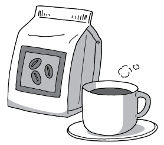
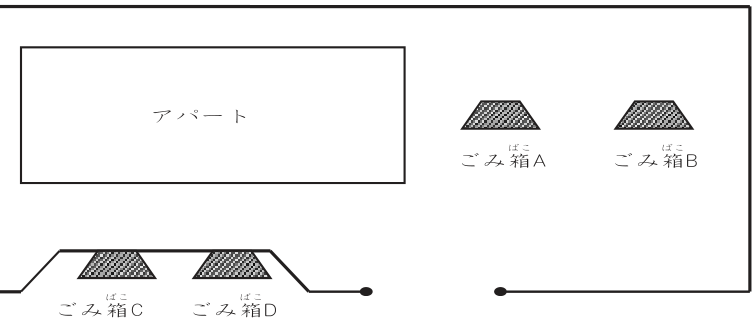

1. あには バスで 会社に 通って います。
もんだい1 の ことばは どう よみますか。1・2・3・4から いちばん いい ものを ひとつ えらんで ください。
2. わたしの せんもんは 医学です。
もんだい2 の ことばは どう かきますか。1・2・3・4から いちばん いい ものを ひとつ えらんで ください。
3. ふねで にもつを おくります。
4. 毎日 ラジオで おんがくを 聞いています。
もんだい3 （ ）に なにを いれますか。1・2・3・4から いちばん いい ものを ひとつ えらんで ください。
5. スーパーで もらった （ ）を 見ると、何を 買ったか わかります。
6. （ ）しないで、どうぞ たくさん たべて ください。
もんだい4 の ぶんと だいたい おなじ いみの ぶんが あります。1・2・3・4から いちばん いい ものを ひとつ えらんで ください。
7. だいどころに りょうりが のこって います。
8. パスポート ばんごうを しらせて ください。
もんだい5 つぎの ことばの つかいかたで いちばん いい ものを 1・2・3・4から ひとつ えらんで ください。
9. けんぶつ
10. じゅうしょ
もんだい1 （ ）に 何を 入れますか。1・2・3・4から いちばん いい ものを 一つ えらんで ください。
（例） わたしは 毎朝 新聞 （ ） 読みます。
（解答用紙）
| （例） | ① | ② | ● | ④ |
1. A「わたしの けしゴム、見ませんでしたか。」
B「あ、つくえの 下に （ ） よ。」
B「あ、つくえの 下に （ ） よ。」
2. （病院で）
A「先生、もう 薬を 飲まなくても いいですか。」
B「いいえ、来週の月曜までは （ ）。」
A「先生、もう 薬を 飲まなくても いいですか。」
B「いいえ、来週の月曜までは （ ）。」
もんだい2 ★ に 入る ものは どれですか。1・2・3・4から いちばん いい ものを 一つ えらんで ください。
（問題例）
つくえの _ _ ★ _ あります。
（答え方）
1．正しい 文を 作ります。
| つくえの | _ | _ | ★ | _ | あります。 |
| 3 上 | 2 に | 4 ペン | 1 が |
2．★に 入る 番号を 黒く 塗ります。
（解答用紙）
| （例） | ① | ② | ③ | ● |
3. 大川「山下さん、おれいの 手紙は もう 出しましたか。」
山下「いいえ、_ _ ★ _ です。」
山下「いいえ、_ _ ★ _ です。」
4. 山田さんは _ ★ _ _ です。
もんだい3 5から9に 何を 入れますか。1・2・3・4から いちばん いい ものを 一つ えらんで ください。
つぎの 文章は アリさんが 友だちの 田中さんに 書いた 手紙です。
田中さん、お元気ですか。わたしは 先週、大学の 近くに ひっこしを しました。前は アパートから大学まで 電車と バスで 1時間半ぐらい かかりました。でも、今の アパート［5］ 大学まで 歩いて 10分ぐらいです。［6］、ここに ひっこす ことに しました。少し せまいですが、新しくて きれいだし、近所に スーパーも あります。駅からも 近くて、生活が とても［7］。それに、アパートの へやの まどから 見える けしきも いいです。だから、ひっこしを して 本当に よかったと［8］。この 手紙と いっしょに、わたしの へやの まどから 見た けしきの 写真を［9］。それでは、また。
2010年2月25日
アリ
5.
6.
7.
8.
9.
もんだい4 つぎの文章を読んで、質問に答えてください。答えは1・2・3・4からいちばんいいものを一つえらんでください。
コーヒーが好きな人に、便利なお店を紹介します。「中野コーヒー」では、インターネットでコーヒーを買うことができます。
コーヒーを送ってもらうには、普通200円かかりますが、500グラム以上頼むと、ただになります。
そして、500グラム以上買うと、200円安くなります。
お店でコーヒーを選ぶのも楽しいですが、忙しいときなど、一度利用してみませんか。

10. インターネットで、「中野コーヒー」から100グラム400円のコーヒーを500グラム買いたいです。いくらになりますか。
もんだい5 つぎの文章を読んで、質問に答えてください。答えは1・2・3・4からいちばんいいものを一つえらんでください。
日本では、むかしから引っ越しをしたとき、近所の家へあいさつに行く習慣があります。「これからいろいろお世話になります。どうぞよろしくお願いします。」という意味です。
アパートやマンションでは、自分の部屋の隣に住んでいる人や、上の部屋と下の部屋に住んでいる人などにあいさつをします。引っ越しをしたら、すぐにあいさつに行きましょう。あいさつに行くときは、小さな品物を持って行くことが多いです。例えば、タオルやせっけん、おかしなどです。しかし、大事なのはあいさつをすることなのですから、どんな物を持って行くかはあまり心配しなくてもいいです。あいさつに行ったけれども、留守だったときは、あいさつのことばを書いた①手紙などを玄関のポストに入れておくのがいいです。
最近は、「引っ越しのあいさつ」をしない人も多くなっています。特に、一人で住むときは、あいさつをしない人がたくさんいます。しかし、私は「引っ越しのあいさつ」は、やはりいい習慣だと思います。
11. 日本では、引っ越しをしたとき、どんな習慣がありますか。
12. どうして「引っ越しのあいさつ」をしますか。
13. ①手紙などを玄関のポストに入れておくのはどうしてですか。
14. 最近は、どんな人が増えていますか。
もんだい6 つぎのA「アパートのみなさんへ」とBのカレンダーを見て、質問に答えてください。答えは1・2・3・4からいちばんいいものを一つえらんでください。
15. 今日は1日です。ビールの瓶がたくさんあって、早く捨てたいです。何日にどこに捨てますか。
16. 今日は1日です。古い本棚とカセットテープがあって、早く捨てたいです。何日にどこに捨てますか。
A
アパートのみなさんへ
四山市のごみの捨て方をお知らせします。4つのごみ箱があります。そして、捨てる日が違います。また、捨てる所も決まっています。注意してください。
| 捨てる所 | 捨てる日 | ||
|---|---|---|---|
| 燃えるごみ | 紙、台所のごみ、古い洋服、など | ごみ箱A | 毎週月曜日と木曜日 |
| 燃えないごみ | プラスチック、カセットテープ、CD、ガラス、など | ごみ箱B | 毎週水曜日 |
| 瓶・缶 | ビールやジュースなどの瓶と缶、など | ごみ箱C | 毎週金曜日 |
| 大きいごみ | 机、テーブル、いす、本棚、など | ごみ箱D | 毎月最初の火曜日 |

B
| 日 | 月 | 火 | 水 | 木 | 金 | 土 |
|---|---|---|---|---|---|---|
| 1 | 2 | 3 | ||||
| 4 | 5 | 6 | 7 | 8 | 9 | 10 |
| 11 | 12 | 13 | 14 | 15 | 16 | 17 |
| 18 | 19 | 20 | 21 | 22 | 23 | 24 |
| 25 | 26 | 27 | 28 | 29 | 30 | 31 |
End of available questions